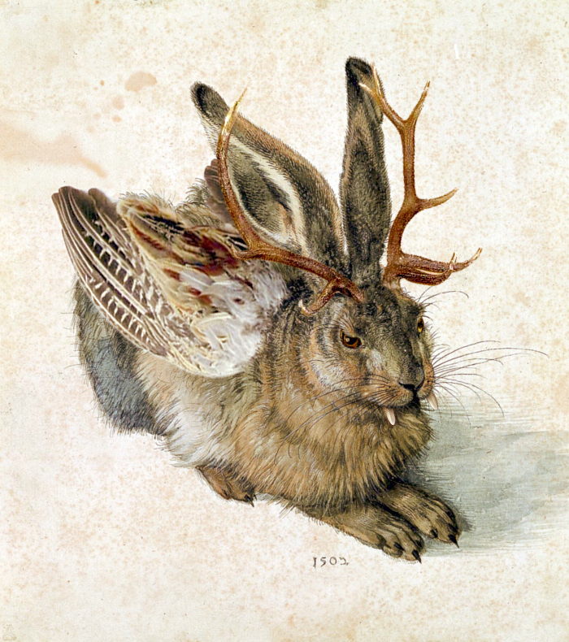

|  |
Bonjour! Je suis Jacouille. Je suis un petit wolpertinger, très câlin! Je suis un peu maladroit, mais mignon. Je m'entends bien avec les autres animaux, sauf avec les chiens de chasse... Mon seul défaut, c'est que je ne suis pas très propre. Je suis passé de foyer en foyer, mais les gens me ramenaient au refuge pour lapin parce que je leur paraissait étrange... Je cherche une famille chaleureuse, qui saura me rendre heureux. |